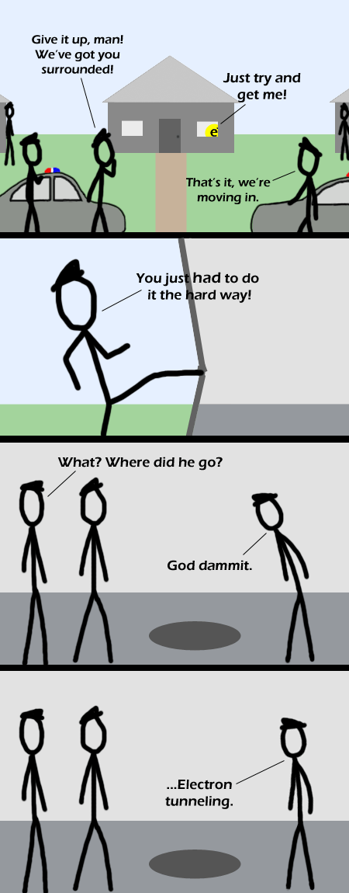

Comic JK 266
When I Feel Like It
⇤
<
?
>
⇥

⇤
<
?
>
⇥
Forum
.
RSS
.
Digg
.
Facebook
.
Reddit
.
Twitter
.
Stumbleupon
Enter your thoughts on number 266 here. Please, no spamming, trolling, or tunneling out of the police's clutches. Someone read SMBC today. >This posted two hours earlier...so maybe someone read Comic JK today? Confused? > Since quantum mechanics is based on probability, there is always a chance that an electron will be in a location--even if it never appears between there and here. That's called 'electron tunneling' (many people would love to have the same talent). With electrons (and other subatomic particles) can't you only know either their position or their velocity, not both? >The product of the uncertainties has to be greater than planck's constant--so you can know both position and velocity, as long as you don't know them *exactly*. >Ok, thanks. The practical application of this is that an electron will get from point a to point b when there is a wall in the way and not have gone through the wall, just appeared on the other side of it. >From the first frame, I already knew it was an electron tunneling joke :P deja vu courtesy of smbc. what's the chance of having two electron tunneling jokes in one day? In fact, theres a chance to have one electron tunneling joke in one day and a chance to have three of them - but no chance that there's only two. >so if they are not posted at the same time the second one both exists and does not exist until the third comic is updated?